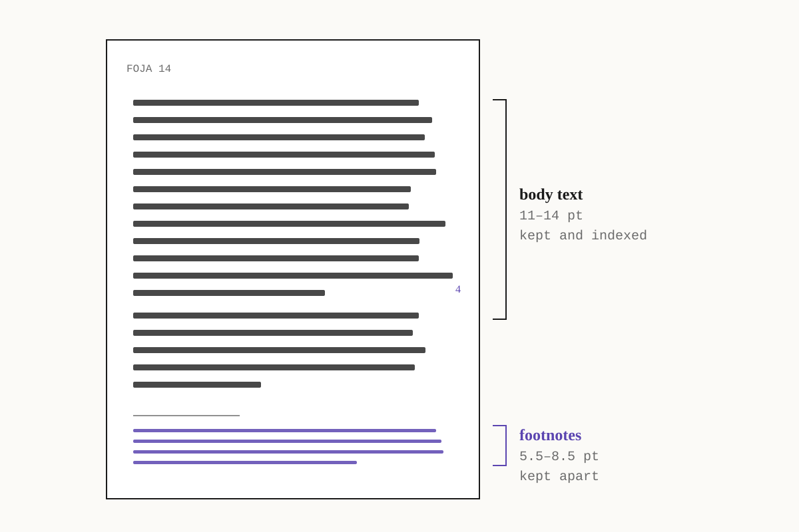
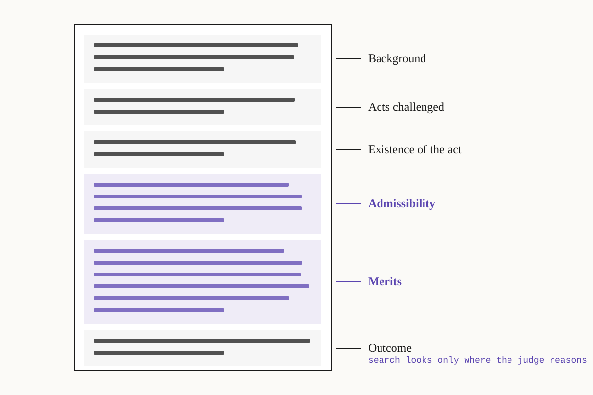
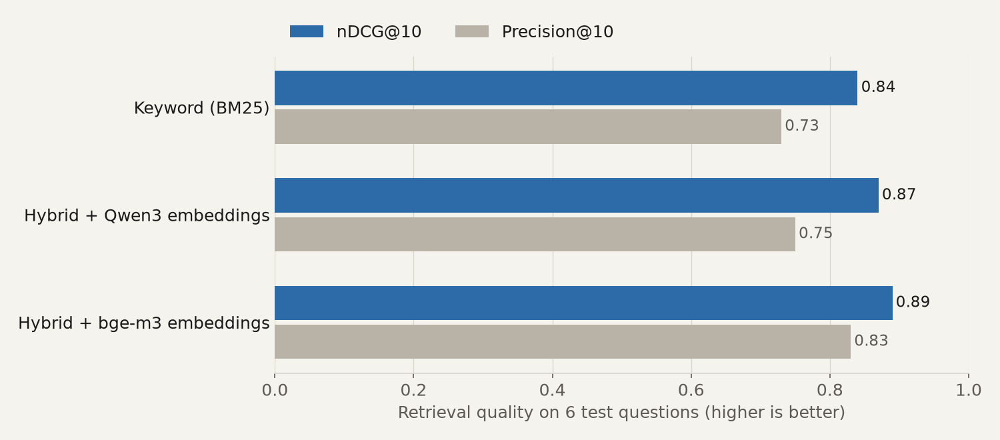
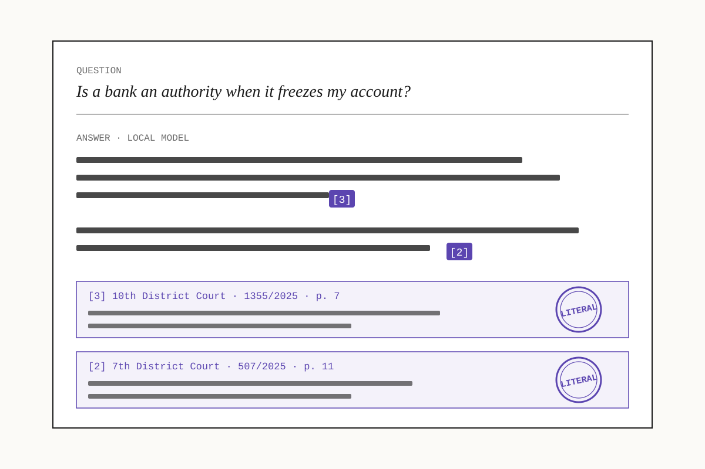
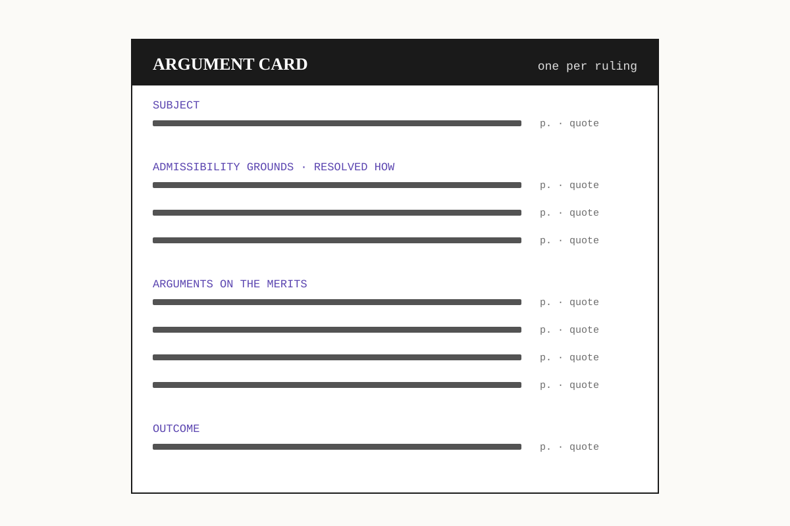
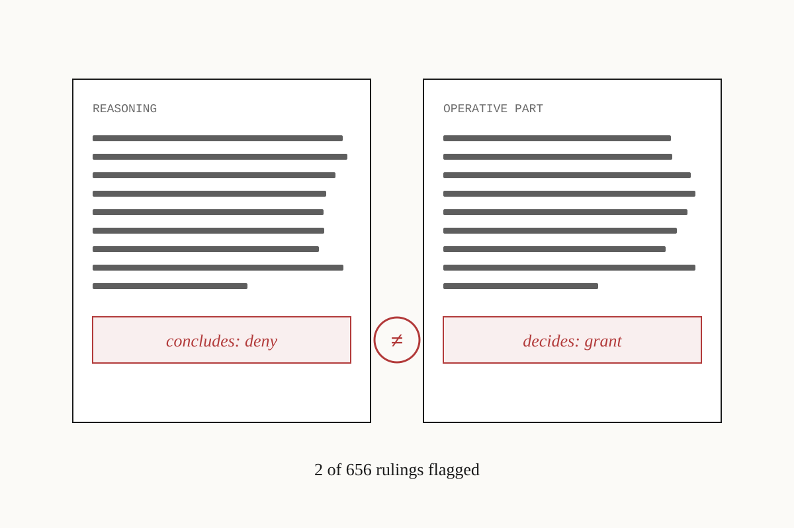

Ask a legal question in plain Spanish. Get an answer built only from court rulings, with the passage, the ruling and the page behind every claim.
District courts publish their rulings as thousands of long documents with no structure. A lawyer wants to know how these courts have decided arguments like theirs, with the exact paragraph to cite.
The system searches every ruling by keywords and by meaning, and a language model running on a desktop GPU answers from what it found, citing court, case and page.
Each quote in an answer is matched against the text of its ruling before it is shown. Below are three real questions, answered by the system on the full index.
Three questions a lawyer might ask. What you see is the system's real output, unedited: the passages the search returned, the answer the local model wrote, and every quote checked against its ruling. Questions and answers are in Spanish, the language of the rulings.

Footnotes are kept apart from the body by their font size, so they do not break sentences in half or pollute the search.

02 / 06Background, admissibility, merits, outcome. A search can look only where the judge reasons. The segmentation agrees with the official outcome in 99% of rulings.

03 / 06364,521 passages indexed by keywords (BM25) and by meaning (bge-m3 embeddings). The hybrid with bge-m3 beat the alternatives and became the default.

04 / 06A local language model reads the retrieved passages and answers only from them; every quote is then checked against the ruling it comes from.

05 / 06The same local model fills a fixed schema for each ruling: claims, arguments, outcome, and the passage behind each entry. 1,161 rulings so far.

06 / 06Reasoning and operative part are compared automatically: 2 of 656 rulings were flagged because the reasoning concludes one way and the decision goes the other.